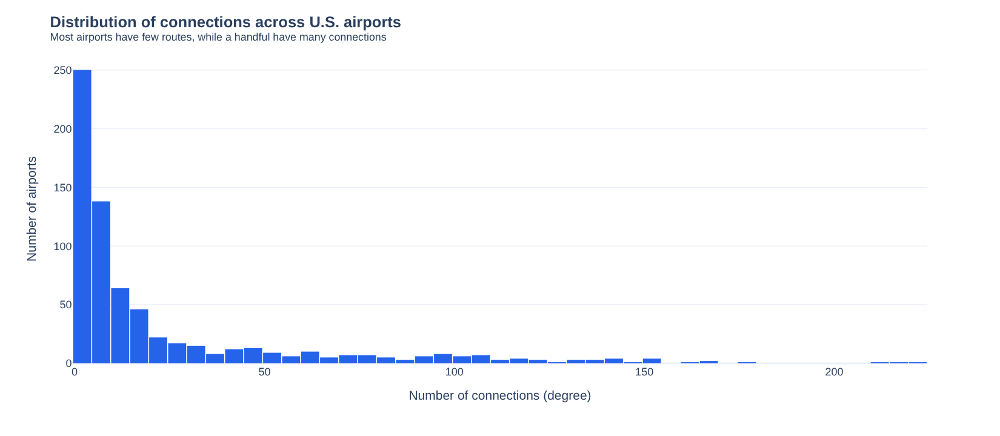
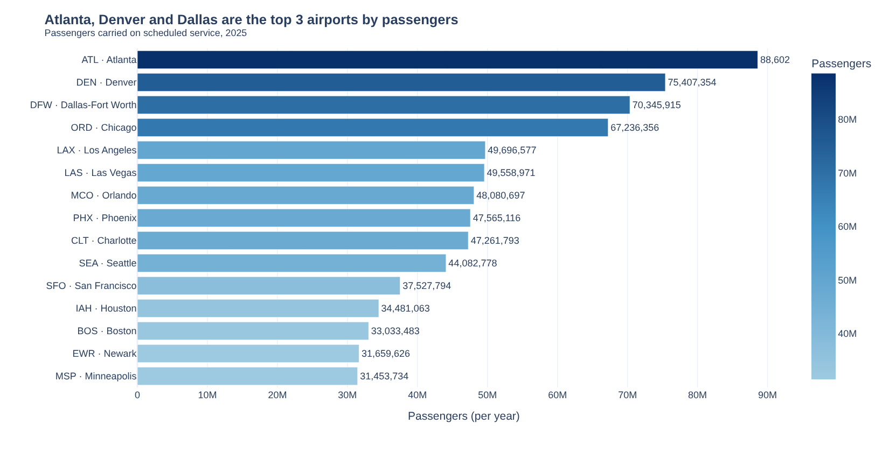
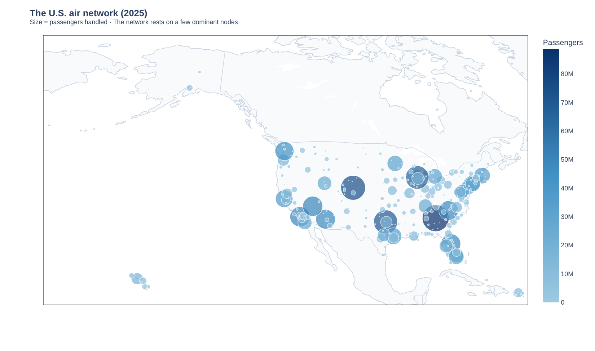
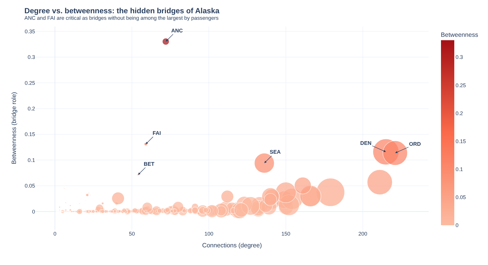
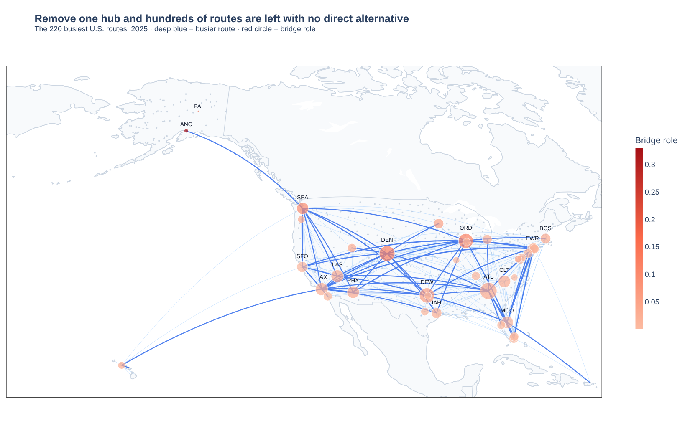
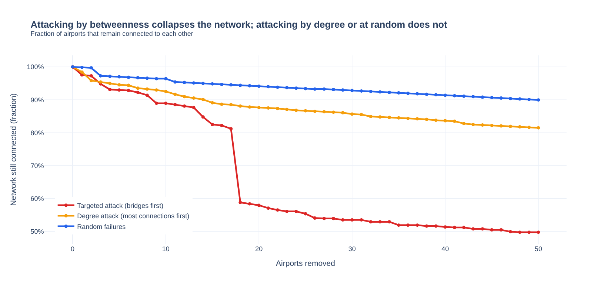
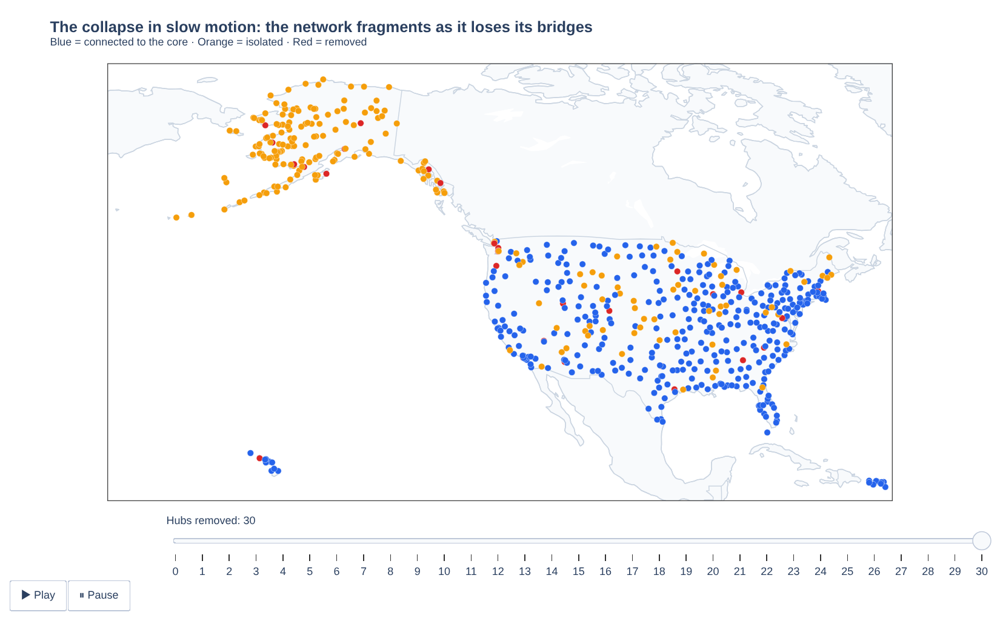

Resilience of the U.S. Passenger Air Network (2025)
Interactive versions of every figure in the analysis. Hover for details, zoom, and play the collapse animation.

1. Distribution of connections
A handful of airports concentrate hundreds of routes.
2. Top 15 airports by passengers
Atlanta, Denver and Dallas lead the network.
3. The network on a map
Airports sized by passengers handled.
4. Degree vs. betweenness
The hidden bridges of Alaska.
5. Backbone routes
The 220 busiest routes and the hubs' bridge role.
6. Failure simulation
Targeted, degree-based and random removal.